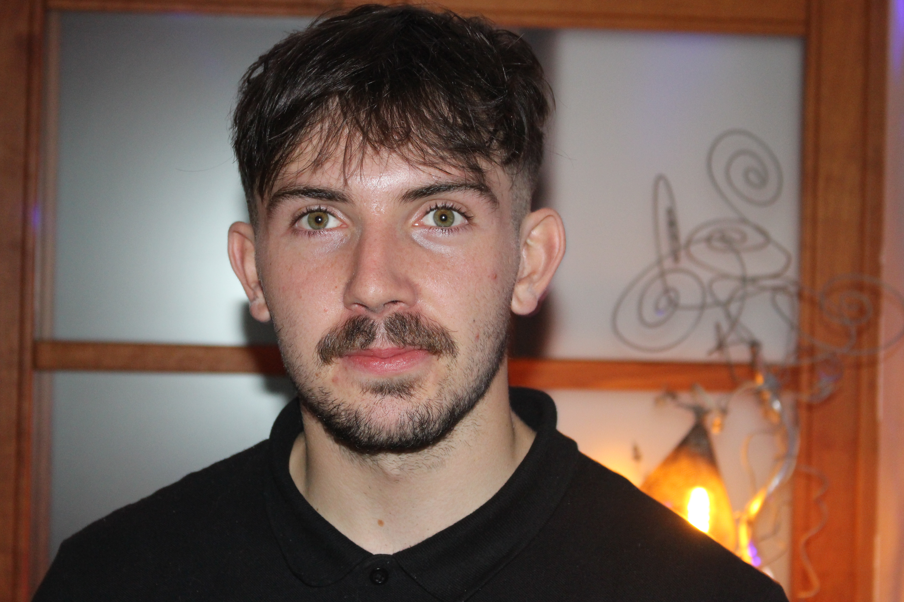

Un profil de terrain, pas un profil de catalogue.
Communication numérique, production audiovisuelle, journalisme de presse. Trois pratiques qui se renforcent mutuellement depuis cinq ans.

Je m'appelle Vivien Salmon. J'ai 22 ans et je finis un Master 2 en Communication Numérique & Conception Multimédia à l'UCO d'Angers en juin 2026. Avant ça, j'ai eu une Licence en Information et Communication dans la même université.
J'ai une caméra, un ordinateur, et j'aime aller voir les choses de près. J'ai couvert des matchs de handball pour des journaux locaux, tourné des réels verticaux sur un camping en plein été, cadré en direct des championnats de France de volley pour la diffusion YouTube de la Fédération, et rédigé une quarantaine d'articles sur le terrain pour Ouest-France et France Bleu Mayenne.
Je recherche un stage de fin d'études de 6 mois dès avril 2026, avec perspective d'embauche, dans une structure qui produit du contenu et qui a envie de bien le faire. J'apporte la maîtrise technique, la réactivité terrain et l'habitude de livrer dans les délais.
Ce qui forme le regard
Football & Course à pied
6 ans en club de mes 13 à 19 ans. Aujourd'hui, running régulier et musculation. Le sport m'a appris la rigueur, le collectif et la gestion de la pression en situation décisive.
Sony α7 III — L'œil du cadre
Chaque plan est une décision. Du choix de la focale à la direction du regard : je cherche l'instant juste, pas l'image parfaite. Le montage commence dans le viseur.
Échecs — Anticipation tactique
En compétition depuis l'enfance. Dans les échecs comme en stratégie de communication, aucune action n'est laissée au hasard. Il faut calculer le coup d'après.
Voyages & Regard élargi
Espagne, Italie, Angleterre, Malte, Autriche. Chaque déplacement m'a confronté à d'autres façons de faire, de raconter, de communiquer.